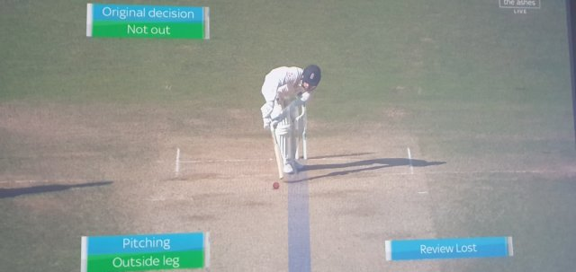
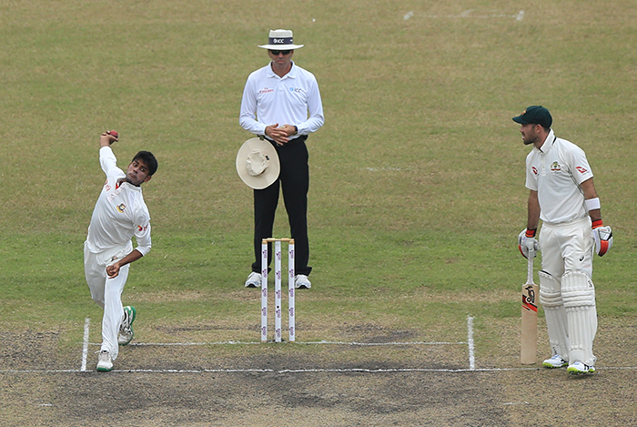

<!DOCTYPE html>
<html dir="ltr" lang="en">
    <head>
        <meta charset="UTF-8"> <!-- UTF-8 is human readable standard-->
        <meta name="viewport" content="width=device-width, initial-scale=1.0">
        <title>Webpage</title>
    </head>
</html>   
<body>

<h1>5 Reasons Why Changing the LBW Laws would be a Poor Move</h1>

<p>As I get ready for another Monday with coffee in hand, I stare in disbelief at my computer screen. 
   But, I realise that ESPNCricinfo don’t really do satirical articles. Plus, Ian Chappell isn’t the kind of guy to write them.</p>
    <p>a tough cricketer and possessor of one of the finest minds of the game, has suggested cricket changes its LBW laws once it returns. Specifically, he says that it shouldn’t matter where the ball pitches or hits the batsman; if the umpire thinks it’ll hit the stumps, you’re out.</p>
    
  <h4>  “Forget where the ball pitches and whether it strikes the pad outside the line or not; if it’s going to hit the stumps, it’s out” are Chappelli’s words. But, while this might seem attractive to the bowlers, it is a bad idea for the game.
</h4> 
    
<h2>1. Encourage negative bowling</h2>
<p>The reasons why we have the current legside law is two fold;

    A ball pitching outside leg can create a bit of a blind spot for a batsman, given they stand side on.
    Leg stump bowling is an unattractive feature of cricket. Also, it is often considered something to avoid from a bowling point of view. “Top of off”, anyone?</p>
    
    <p>If Ian Chappell gets his wish, then a delivery pitching outside leg stump can result in a wicket. So, why not bowl around the wicket? Switch the famous 7-2 field and make it a 2-7 field? Focus on legstump rather than off? Boring.
    
    This move will encourage negative bowling; the kind that if there is too much of, the umpire will call a wide as per current laws. There will be an increase in unwatchable passages of play, which does not do the game any favours, should Chappell get his wish.</p>




<h2>2. Swings the balance too far the other way</h2>

<p> Cricket has evolved into a batsman’s game. However, better pitches, rather than a change in LBW law, is a key part of creating an equal battle between bat and ball.</p>

<p> The balance will swing too far the other way if we introduce an LBW rule where it doesn’t matter where the ball pitches or hits the batsman. All of a sudden, bowlers, particularly spinners on tracks with some turn, will have too much of an advantage. As a result, we will see an increase in low scores as the margin of error for batsmen becomes way too small.

</p>

<p>It’s all about an equal battle between bat and ball. Tactics focused on hitting the pad by all means possible do not encourage positive, attractive cricket.</p>


<hr/>

<a href="../Assignment_1/Index.html" target="_blank"><b>Tap Here To Go Back To The Main Page</b></a><br/><br/><br/>
<h1> Related Posts </h1>


<form>
<a href="https://timesofindia.indiatimes.com/sports/cricket/news/when-child-prodigy-kl-rahul-caught-rahul-dravids-eye/articleshow/75822829.cms" target="_blank"> 
    Link 1 : When child prodigy KL Rahul caught Rahul Dravid's eye </a> <br/> <br/>

<a href="https://www.news18.com/cricketnext/news/disinfecting-the-ball-during-matches-being-considered-cricket-australia-2628651.html" target="_blank">
     Link 2: Disinfecting the Ball during Matches Being Considered: Cricket Australia</a><br/> <br/>
<a href="https://sports.ndtv.com/cricket/virat-kohli-shows-off-extreme-weightlifting-skills-ab-de-villiers-left-in-awe-watch-video-2231766" target="_blank">
    Link 3: Virat Kohli Shows Off Extreme Weightlifting Skills, AB De Villiers Left In Awe. Watch Video</a><br/> <br/>
<a href="https://www.republicworld.com/sports-news/cricket-news/ms-dhoni-smartness-won-india-2007-bowlout-vs-pak-robin-uthappa-cricket.html" target="_blank">
    Link 4 : MS Dhoni's 'smartness' Won India The 2007 World T20 Bowlout Vs Pakistan: Robin Uthappa</a><br/> <br/>
<a href="https://www.hindustantimes.com/cricket/wasn-t-selected-in-junior-cricket-as-father-refused-to-pay-bribe-virat-kohli/story-RmKNstDAP0yhwAAWAzEL8N.html" target="_blank">
    Link 5 : Wasn’t selected in junior cricket as father refused to pay bribe: Virat Kohli</a><br/> <br/>

</form>
</body>